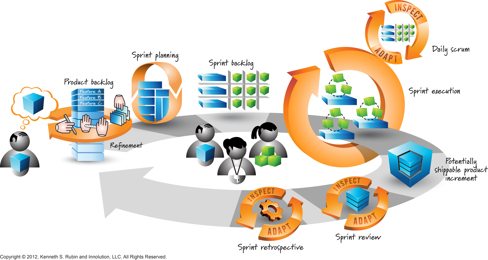
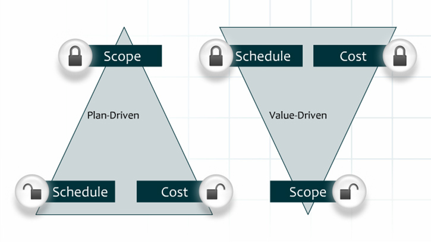

An introduction to
Agile & Devops
-
Nalys Java Graduate Program
Hi !

- Maxime Choffat
- IT Consultant @NalysGroup
- GIS Specialist
- Agile & DevOps enthousiast
- Games lover
- Contact :
How about you ?
Rules for today :
- Hint, preview
- Genuinely subjective
- Questions welcomed !
Today is about approahes and ways of thinking
Planning
- Morning : Agile
- Afternoon : DevOps
- Evening :
Beers
The Agile infrastructure
BUSINESS
AGILE
DEVELOPMENT
OPERATIONS


Agile ?
- Change from tradictional project management (V, waterfall ...)
- Change from "Project management" to "Product management"
- Team Oriented
- Specifications "on the fly"
From Brussels To Moscow ...
- Plan the trip as precisely as possible
- You need to plan and anticipate everything
- 10 minutes
Iteration
- Chop work in small pieces
- Conceive
- Document
- Realize
- Test
Work, event if "incomplete", is functionnal and can be shown to client

From Brussels To Moscow ... Agile !
- Plan a 1 day trip knowing that you aim to go to Moscow
- You need to plan and anticipate everything
- 10 minutes
Why iterations
- Why sprints: timeboxing
- why timeboxing : deadline
- Why deadline : we are better deadlines
Benefits of iterations
- Early visibility on work done
- Positive communication
- Feedback loop
- More transparency
- More collaboration
- Better TTM
Quick origins
- "Child" of lean
- First iterative development : 1986
- First Scrum usage : 1993
- Agile Manifesto : 2001
Why Scrum ?
- Most used method/framework
- => most fieldproven
- => most documented (books, blogs, trainings ...)
Roles definition
- Dev Team
- Product Owner
- Scrum Master
Ceremonies
- Sprint planning
- Sprint review
- Sprint restrospective
- Daily meeting
- (Grooming)
The process

- Build the Product Backlog
- Build the Sprint Backlog
- Do the Sprint
- Review the sprint (feedback loop, product side)
- Retrospective (feedback loop, team side)
Measure progress
- Team motivation
- Client feedback and transparency
- Risks preview
What about contractualisation?

Kanban

Kanban
- Just in time method
- Based on 4 core principles
- Uses 6 core practices
eXtreme Programming (XP)

eXtreme Programming (XP)
- Can be used as "sub framework" part of another framework
- Not 1 coding / 1 watching

 “It is not the strongest of the species that survives,
“It is not the strongest of the species that survives,
not the most intelligent that survives.
It is the one that is the most adaptable to change.”
Charles Darwin
PIZZA TIME !
Kanban
- Start with what you do (k)now — regardless of how ugly it is
- Respect the current process — roles, responsibilities & titles
- Leadership at all levels
- Agree to pursue incremental, evolutionary change
Kanban is NOT a process!
It’s a change management method:
something you DO to a process.
Start where you are
- Nalys Pizzeria
- Produce as many scliced as you can
- Iterations are NOT fixed
The ideal pizza
- Nice base with tomato
- 3 ham pieces (Pink post-it)
- 3 pineapple pieces (Yellow Post-it)
- Toppings needs to be glued !
- Oven : 30 secs / no changes when On
- 3 slices max in the oven
Iteration 1 review
- Leftovers :
- Pizza base = -4 points
- topping = -1 point
- finished slice = +10 points
6 core values
- Visualize the workflow
- Limit work in process (WIP)
- Make process policies explicit
- Measure & optimize flow
- Implement feedback loops
- Improve collaboratively, improve experimentally
Plan Iteration 2
- Visualize the workflow
- Limit work in process (WIP)
- Make process policies explicit
Iteration 2 review
- Leftovers :
- Pizza base = -4 points
- topping = -1 point
- finished slice = +10 points
New ! "Pizza Rucola" !
- Slim green Post-it : Rocket Salad
- 7 leaves per slice
- WARNING : Rucola burns in the oven ! It must be placed after baking.
New ! We take orders !
- Points are given only for fully delivered orders
- Orders picked from central location & delivered to another central location
- Mark the "mm:ss" timestamps!
Iteration 3 review
- Leftovers :
- Pizza base = -4 points
- topping = -1 point
- finished slice = +10 points
Draw you own Kanban !
- Look back to the game
- Draw the flow including WIP limits
- Use your materials to make it look nice
DevOps is unique to everyone who practices it
Quick history
- From agility to "Agile Infrastructure"
-
DevOps" - Patrick Debois, 2009 ( jedi.be )
- Old concepts New Trend
The Agile infrastructure
BUSINESS
AGILE
DEVELOPMENT
DEVOPS
OPERATIONS
A story about Devs and Ops
DEVELOPER

WALL OF CONFUSION
OPERATIONAL
I want change !
I want stability !
CATCH !
WHAT ?
A problem occuring between devs and ops might find it's solution elsewhere
But not only !
- Solve business problems
- Break silos
- Involve everyone
- Deliver faster, collaborate faster
What it is not
- Removing Ops
- Just Tools
- Just Culture
- Just Devs and Ops
- A full job title
Why ?
- Teamwork
- More agility
- Increased quality
- Reduced frustration
- Reduced Time To Market
How ?
- Change culture
- Unify processes
- Unify tooling
Tips
- Don't waterfall DevOps !
- Go iterative
- Measure team success
- People and culture first, tools second
A flow example
1. Break Silos

2. Go iterative

3. Measure progress

4. It is ok to fail

5. DevOps is unique to your project